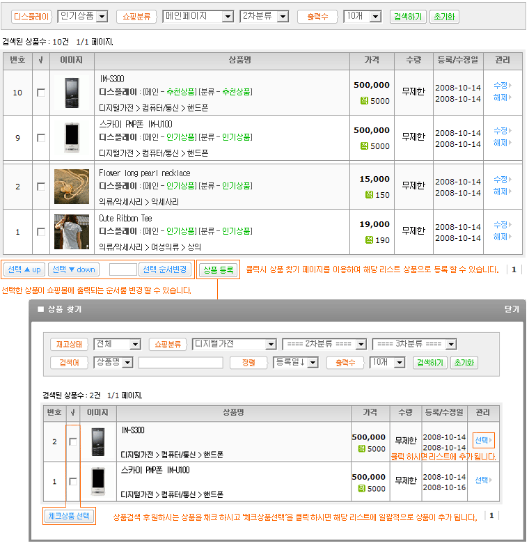

전시상품 리스트
메인 및 분류메인 페이지에 나타날 상품 리스트를 확인 할 수 있습니다.
전시상품은 상품등록 및 수정 페이지에서 선택 할 수 있습니다.
전시 위치는 인기상품, 추천상품, 신상품이 있으며 메인 및 분류메인 디자인 설정에서 사용함으로 설정 되어야만 나타 납니다.
'해제'를 누르시면 해당 전시상품에서 제외되며 상품은 삭제 되지 않습니다.
순서를 변경 할 상품을 선택 하시고 '선택 ▲ up', '선택 ▼ down'으로 순서를 변경 하시거나 순서를 입력 하셔서 바로 변경 하실 수 있습니다.
